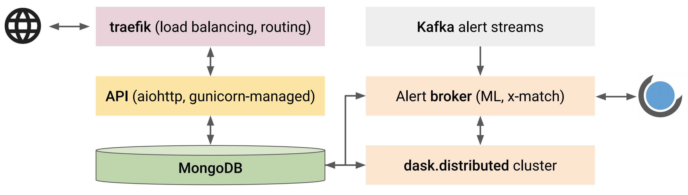

Technical implementation¶
This is the TL;DR section of the docs.
The key characteristics of Fritz are efficiency, scalability, portability, and extensibility. Fritz employs a modular architecture and integrates and extends two major components: Kowalski acts as the alert processor and data archive, and SkyPortal, which handles the rest of the stack. The schematic overview of our system is shown below:

Kowalski and SkyPortal¶
A schematic overview of the functional aspects of Kowalski and how they interact is shown below:

A non-relational (NoSQL) database MongoDB powers the data archive, the alert stream sink,
and the alert handling service. We base the choice of MongoDB as the workhorse on the following reasons:
Individual alerts are stored as binary
JSON(BSON) “documents” in “collections”, a natural format for theAVROalert packets.Collections are implemented as B-trees, which guarantees
~log(N)execution times for the standard CRUD operations, whereNis the number of documents in the collection.Collections support multiple (compound) indexes and associated (in-memory) “covered” queries, which will provide efficient access to the most-in-demand data.
Being a NoSQL database,
MongoDBdoes not enforce any schema by default meaning no downtime in case of an alert packet schema change.Built-in
GeoJSONsupport with 2D indexes on the sphere allowing efficient (potentially complicated) positional queries.Built-in support for horizontal scaling through sharding.
An API layer provides an interface for the interaction with the backend:
it is built using a python asynchronous web framework, aiohttp, and the standard python async event loop
serves as a simple, fast, and robust job queue.
A programmatic python client is also available
to interact with Kowalski’s API.
Multiple instances of the API service are maintained using the Gunicorn WSGI HTTP Server.
Incoming and outgoing traffic is routed through traefik,
which acts as a simple and performant reverse proxy/load balancer.
An alert brokering layer listens to Kafka alert streams and uses a dask.distributed cluster for
distributed alert packet processing, which includes data preprocessing, execution of machine learning models,
catalog cross-matching, and ingestion into MongoDB.
It also executes user-defined filters based on the augmented alert data and posts the filtering results
to a SkyPortal instance. Kowalski is containerized using Docker software and orchestrated with docker-compose
allowing for simple and efficient deployment in the cloud and/or on-premise.
SkyPortal, similarly being an API-driven system, provides an interactive marshal
and a follow-up observation manager with flawless integration with both robotic and classical follow-up facilities.
It is designed with extensibility and scalability in mind: it uses an asynchronous python tornado-based backend,
and a React/Redux-powered frontend. It is containerized and can be orchestrated with docker-compose or kubernetes.
SkyPortal features real-time Slack-like messaging with notifications (via email or text);
fine-grained access control with ACLs and roles; rich visualization capabilities;
authentication via OAuth; and distributed computation via Dask.